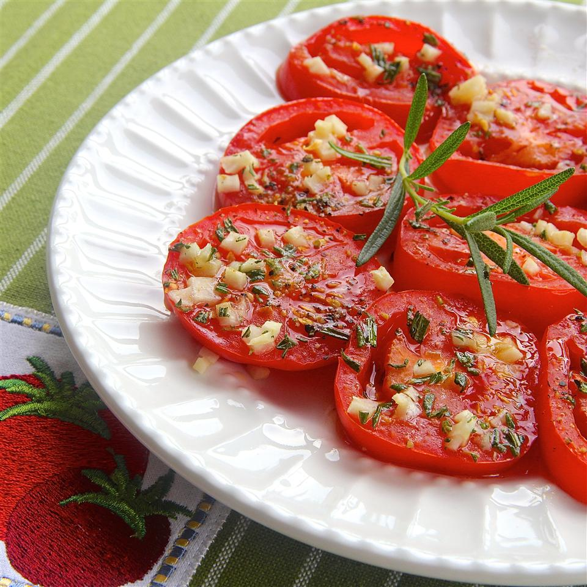

Baked tomato slices

Ingredients
- olive oil, divided, or as needed
- 1 large tomato, cut into 1/2-inch-thick slices
- 1 sprig fresh rosemary, leaves stripped and finely chopped
- 1 clove garlic, minced
- salt and ground black pepper to taste
Instructions
- Preheat oven to 350 degrees F (175 degrees C). Brush baking sheet with about 1 tablespoon olive oil.
- Arrange tomato slices on the baking sheet.
Sprinkle rosemary and garlic over tomatoes and brush with remaining olive oil; season with salt and pepper.
- Bake in the preheated oven until tomatoes are tender, 5 to 10 minutes.